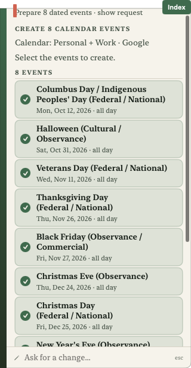
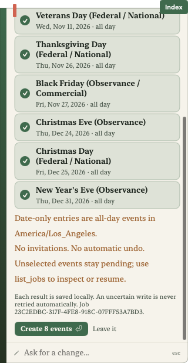
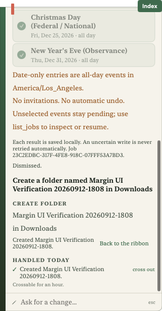
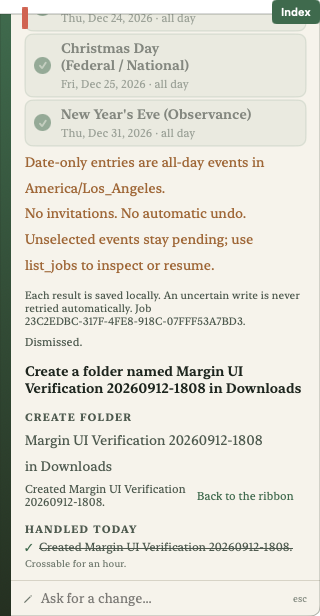
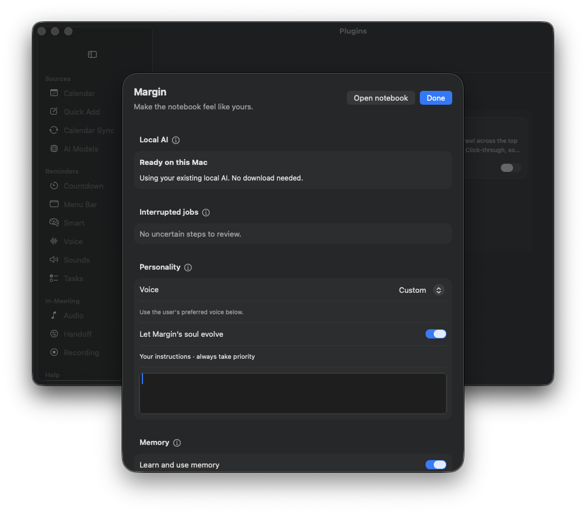

Updated 2026-09-13T01:17:24.137491+00:00
76/78 native cases passed. Managed installation: passed.
The eight-holiday request passed: all eight dates and titles, all-day flags, one batch proposal. No real calendar events were created during evaluation.
Tentative RSVP and date-only moves now route correctly. Seven related cases, including the holiday batch, passed. The complete 78-case suite has not been rerun after these changes.
Targeted results · Run timestamp and configuration
Build 202609121758 installed at 2026-09-13T00:59:10.709460+00:00. UI verified 2026-09-13T01:17:24.082593+00:00.





24 GB RAM · median 4.0s · p95 15.8s. Runtime model residency peaked at 2.91 GiB.
These are native app requests, with thinking behavior unchanged. A build ran concurrently, so system swap growth cannot be attributed solely to the model. This does not validate a 16 GB Mac, and workstation latency is not directly comparable.
The RSVP miss was an unnecessary refusal. The date move omitted a destination; the tool refuses incomplete arguments. Passing safeguards does not turn a failed request into successful completion.
| Category | Pass / tested |
|---|---|
| Calendar changes | 12/14 |
| Calendar reads | 7/7 |
| Capabilities | 8/8 |
| File changes | 10/10 |
| File reads | 10/10 |
| Jobs and schedules | 8/8 |
| Recordings and notes | 6/6 |
| Safety boundaries | 3/3 |
| Tasks | 8/8 |
| Web research | 4/4 |
{
"detail": "AI is ready on this Mac. Your model will be kept across app updates.",
"endpoint": "http://127.0.0.1:64258",
"finished": "2026-09-13T00:42:36Z",
"model": "margin-lora-pilot:final",
"passed": true,
"ready": true,
"started": "2026-09-13T00:40:44Z",
"tool_reply": "Reply(text: \"\", toolCalls: [MeetingIntro.OllamaToolClient.ToolCall(name: \"list_capabilities\", arguments: [:])])"
}Every native case · Native guards and run log · Setup guards · Weight verification · Pinned package · Published model